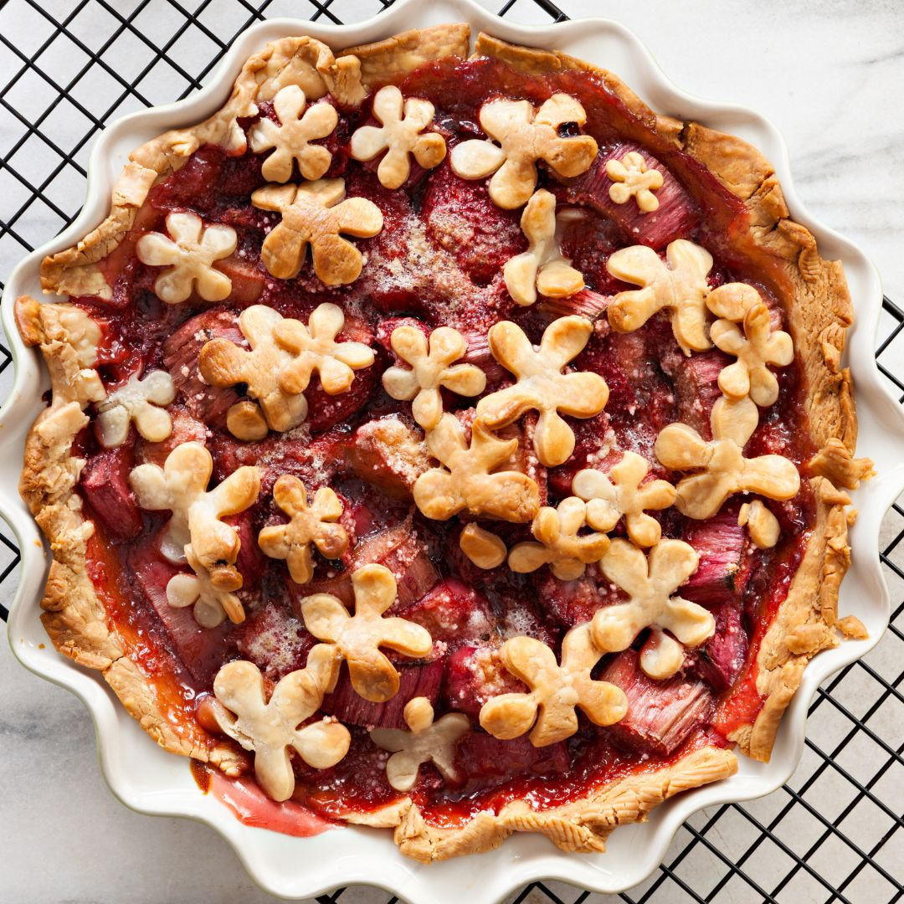

Rhubarb Pie

Pie, made with blueberries
This recipe is about a pie. A pie that was once a humble blueberry but
had a dream of becoming much more.
Ingredients
- Sugar
- Cornstarch
- Cinnamon
- Salt
- Blueberries
- Pie Crust
- Butter
Steps
- Sprinkle the berries with sugar, cornstarch, cinnamon, and salt.
- Pour the filling into the botton pie crust and finish with a lattice crust on top.
- Bake until the filling is bubbling and the crust is golden.